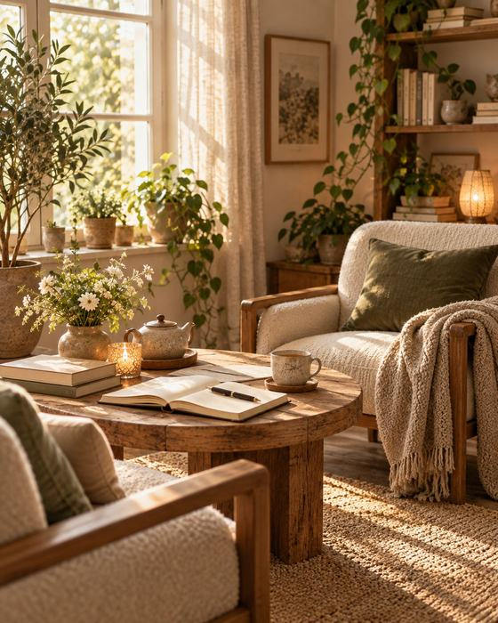
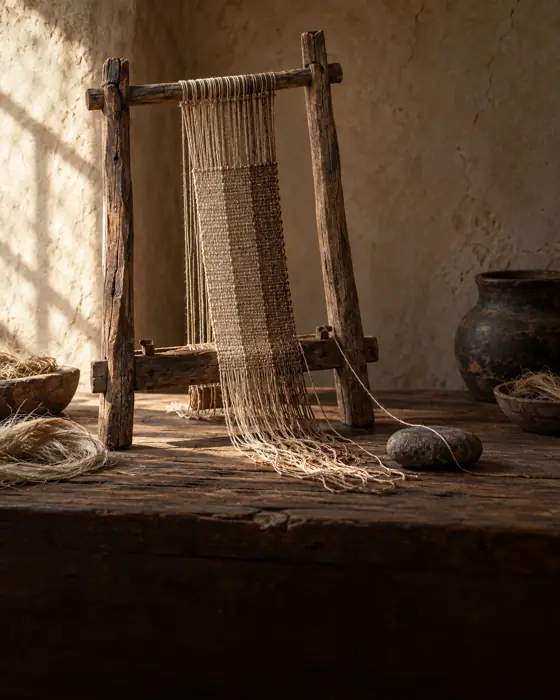
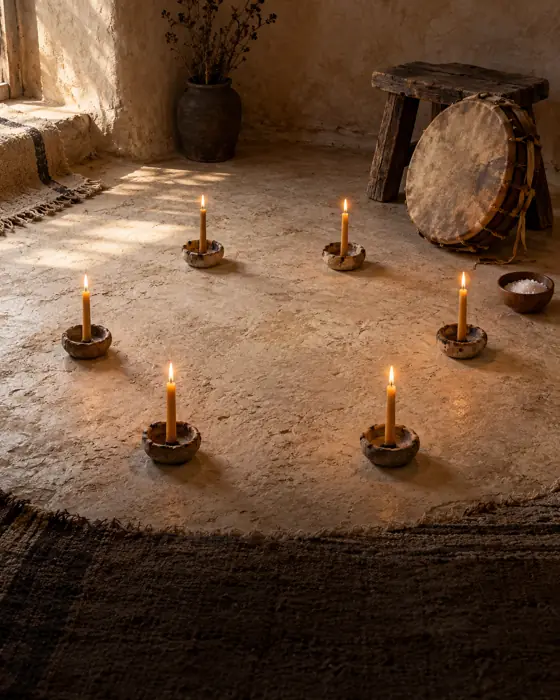
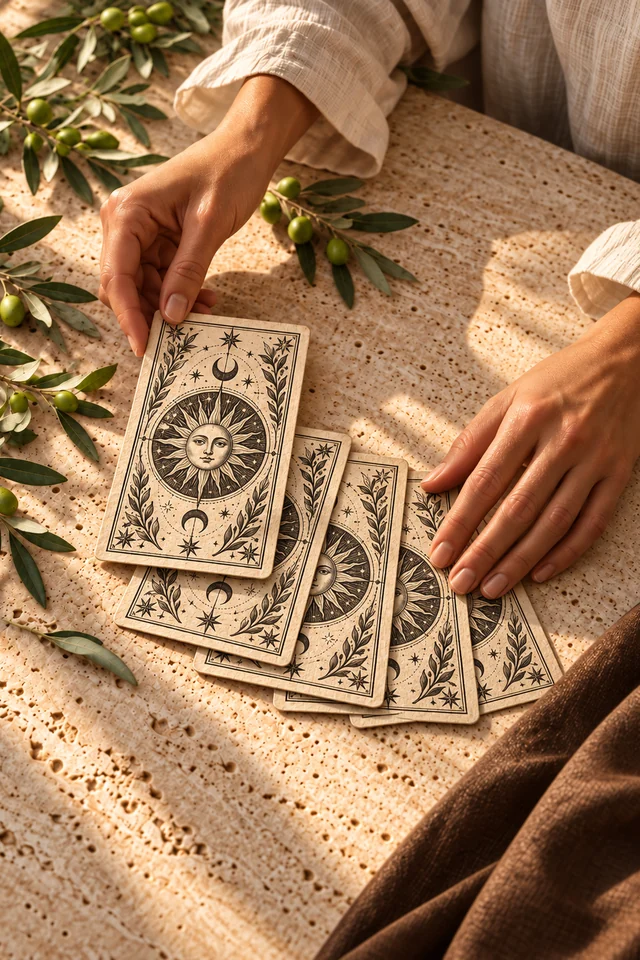
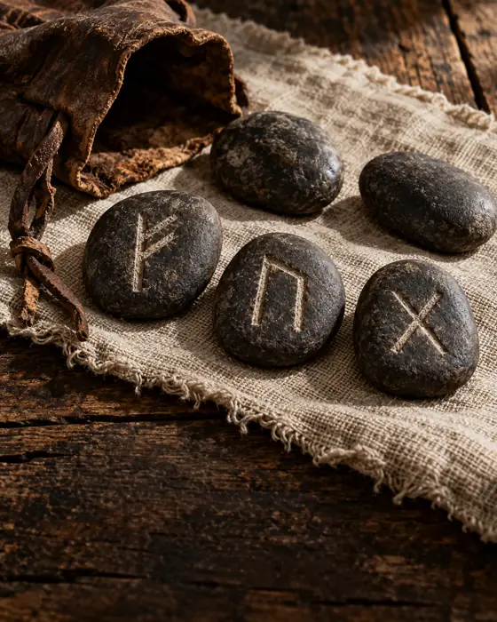
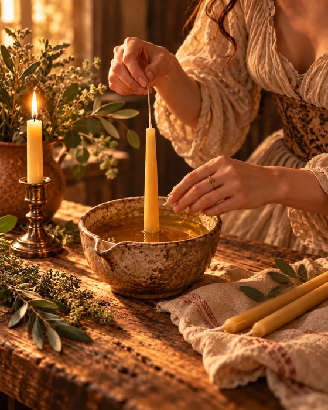
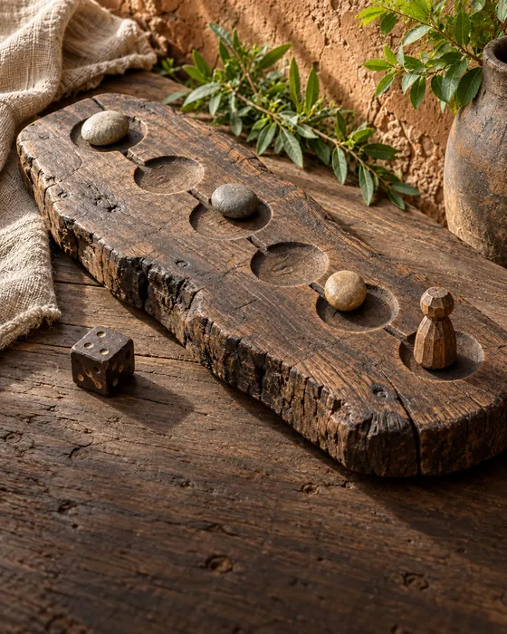
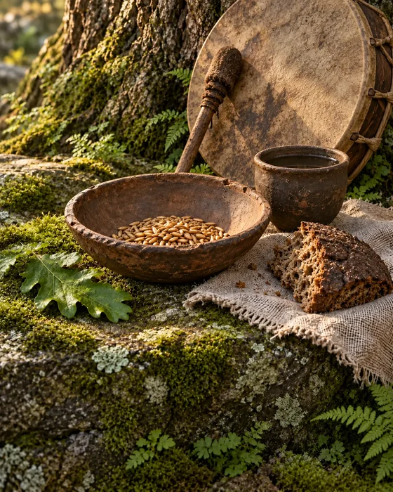
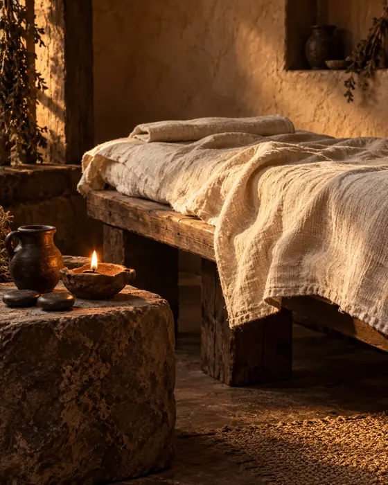
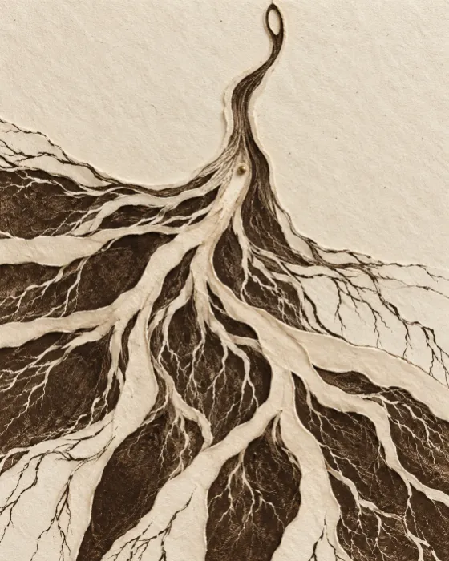

Подробнее о формате
Личные встречи · Практики · ОбучениеВаш запрос.
Ваш запрос.
Подходящий формат.
Работа с родом, Таро, рунами и свечами.
Выберите направление или начните с разговора.

С чего начнём?
9 направлений
Личная встречаКонсультация
Обсудить ситуацию и возможные следующие шаги.
Онлайн / офлайн
Личное сопровождениеСвязь с Родом
Последовательная работа с родовой темой.
3 месяца
Камерная группаМистерия «Сила Рода»
Женская встреча с ритуальными практиками.
120 минут
ОбучениеКарта как зеркало
Таро и метафорические ассоциативные карты. 48 уроков: 24 + 24.
Авторская программа
ОбучениеРуны
Изучать знаки и переходить к практике.
Онлайн
ОбучениеСвечные практики
Познакомиться с воском и работой со свечами.
Авторская программа
Игровая практикаИгра «Сила Рода»
Исследовать свой запрос через игровой формат.
Индивидуально / в группе
Ритуальная практикаПодношения предкам
Практика памяти и благодарности.
По согласованию
Телесная практикаОгненный массаж
Телесный формат с предварительным обсуждением условий.
ОфлайнМожно начать без готового решения
Напишите, что вас интересует — обсудим возможный формат.

Кто будет рядом
Екатерина Белая
Веду авторские практики, индивидуальные встречи и небольшие группы. В работе соединяю родовую тему, символы и личное сопровождение.
01 / Обсудим запрос02 / Выберем формат03 / Договоримся о встрече
Перед первым шагомКоротко
Коротко
о главном
Как узнать цену и ближайшие даты?
Откройте карточку и нажмите «Обсудить этот формат». В заявку подставится название направления; стоимость и дату уточните у Екатерины.
Можно ли участвовать онлайн?
Это зависит от направления. Способ проведения указан в подробностях, если он опубликован на сайте; остальные условия уточняются перед записью.
Что выбрать для первого знакомства?
Можно начать с консультации или написать Екатерине с просьбой помочь выбрать формат.
Нужна ли подготовка?
Расскажите о своём опыте при обращении. Подготовку и условия участия обсудите до встречи.
Начнём с разговора?
Личный ответ на ваш вопрос — в Telegram.